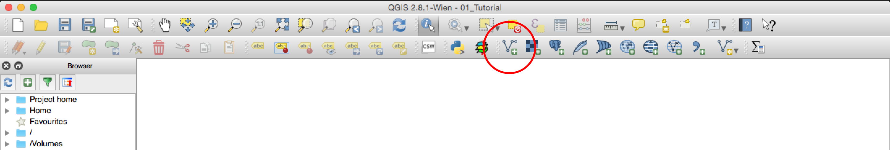

Datasets
To create this map we will be using the following datasets:
Adding Layers
First you need to open qGIS and add the layers you downloaded
To add shapefiles click on the
Add Vector Layerbutton. Other types of data will be added using the other buttons, but in this tutorial we will only be using vector data (shapefiles). Other types of data include rasters, csv (comma separated values), and postGIS layers.Make sure you select the files with the extension
.shp. Remember that a shapefile is actually made up of 5 or 6 individual files with different extensions. Normally, these individual files are the following:.shp - The main file that stores the feature geometry (required).
.shx - The index file that stores the index of the feature geometry (required).
.dbf - The dBASE table that stores the attribute information of features (required).
.sbn and .sbx - The files that store the spatial index of features (these might get corrupted, see note at the end of this tutorial).
.prj - The file that stores the coordinate system information.
For more information on these extensions and others see this explanation by ESRI.